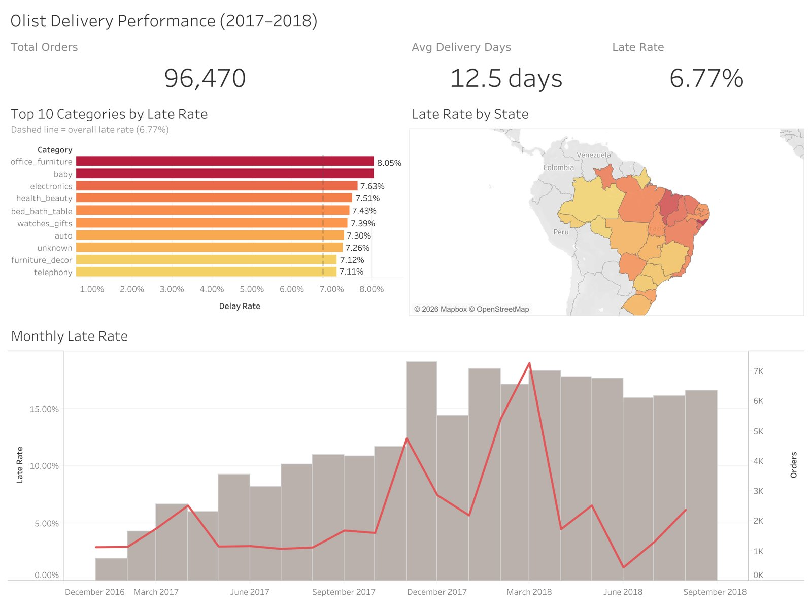

Where and when do e-commerce deliveries run late?
96,470delivered orders analysed across 9 linked tables
6.77%arrived after the promised date
2.27 vs 4.29average review stars, late vs on-time orders
- Built
- A MySQL database of 1.5M+ rows with keys and foreign keys, loaded with Python. Fixed data-quality problems on the way: non-unique review IDs, zip codes that lost their leading zeros, and products with no category.
- Analysed
- Late rate by state, product category and month with multi-table JOINs, CTEs and window functions (LAG for month-over-month change).
- Found
- Region matters most. Rio de Janeiro, the second-largest market, runs at 12.1% late against São Paulo's 4.5%. Late rates spike at Black Friday (12.4%) and peak in March 2018 (19.0%).
- Recommended
- Region-specific delivery promises for remote states, carrier review for Rio de Janeiro, and logistics capacity planning before peak periods.
